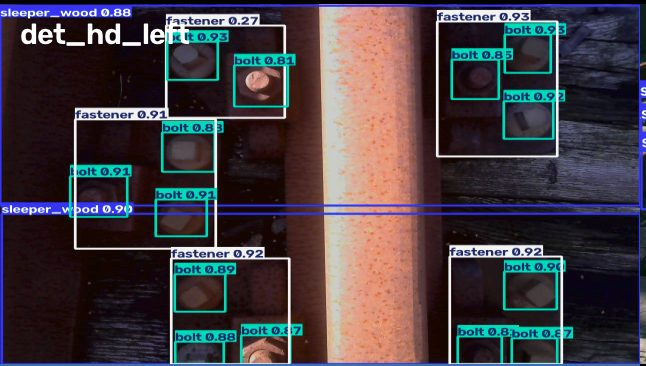
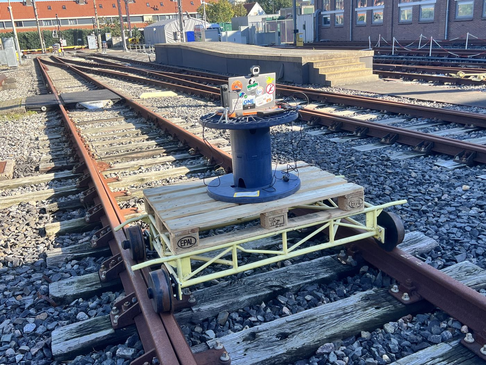
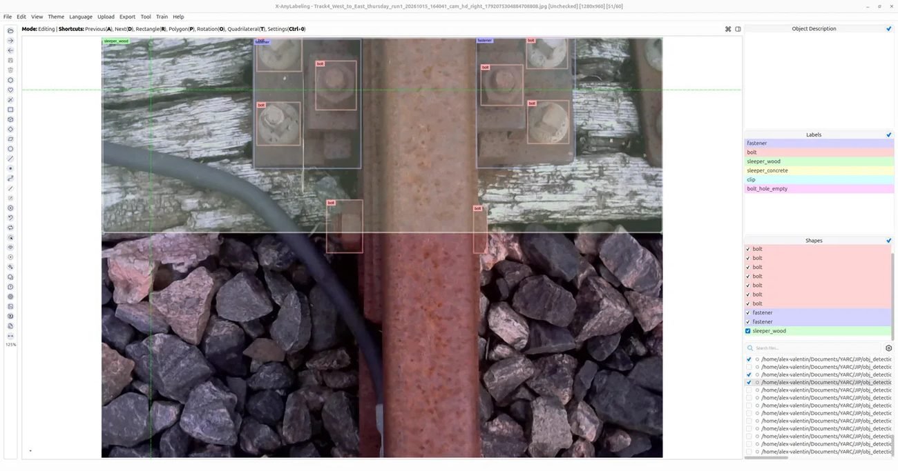
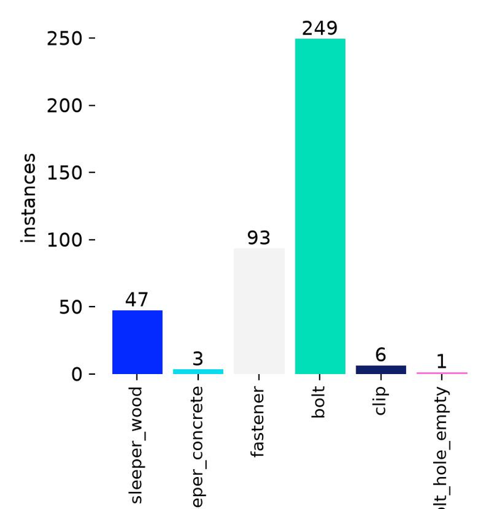
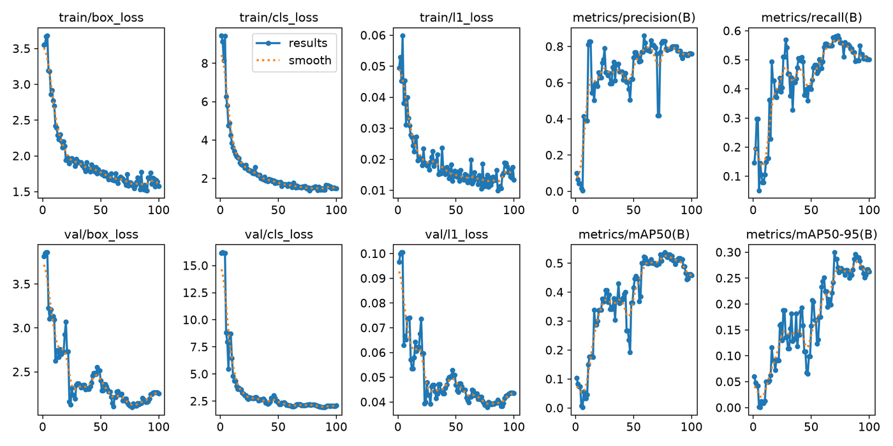
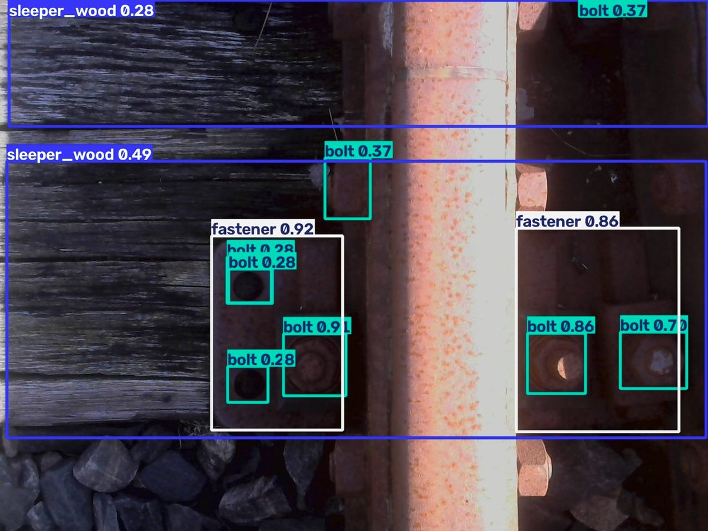
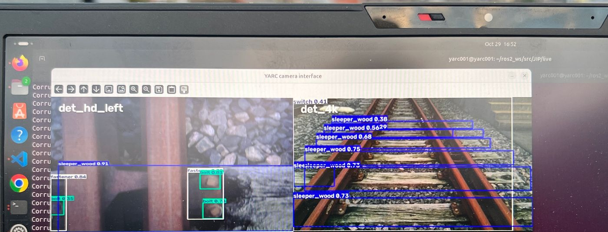
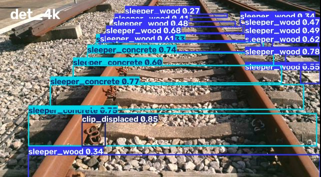
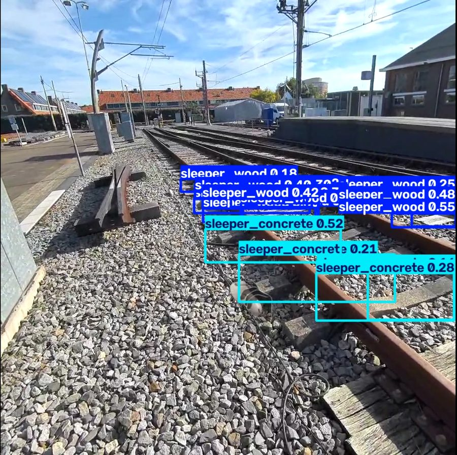
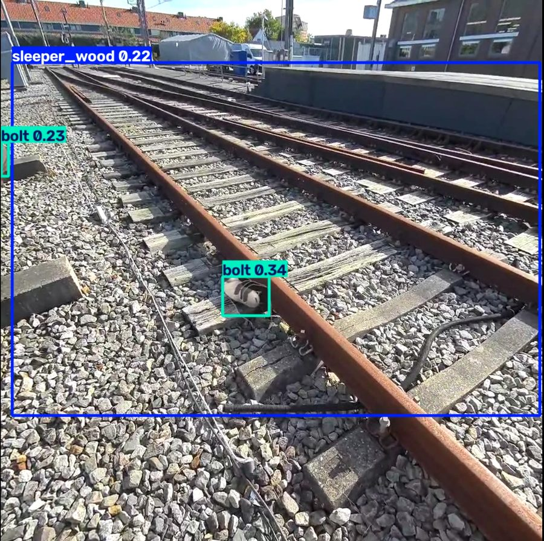

Teaching a rail trolley to see
YARC is a start-up building an affordable robot that rides the rails and inspects them. In a five-person team I owned the camera perception subsystem: getting clean footage off a hand-pushed trolley, turning it into a dataset I could trust, training the detectors, and running them live on the track.
one detector each
over 4 tracks
extracted
held-out track*
laptop CPU
*Top-down model, common classes (sleepers, fasteners, bolts), small validation set. The details are below.
Detect components first, infer defects second
Defects are rare. A detector trained directly on “defect” would have almost nothing to learn from. Components are different: sleepers, fasteners and bolts show up in every frame and look distinct, so a few hundred labelled boxes are enough to teach a model to find them.
Missing parts can then be inferred by rules: a sleeper side with no fastener, a concrete fastener with no clip, a baseplate with fewer bolts than its twin. An alarm can show which rule fired, which supports the inspector's judgement instead of replacing it.
The three cameras see the track so differently that one model would not serve all of them, so each view has its own detector. All are YOLO26 models from the Ultralytics library, fine-tuned from COCO-pretrained weights. With only dozens of labelled images, transfer learning was the practical choice.
| Camera | View | Looks for | Model |
|---|---|---|---|
| HD webcam | Top-down over one rail | Sleepers, fasteners, bolts, clips; missing bolts and fasteners | YOLO26n, trained |
| 4K webcam | Forward and down | Sleeper condition, switches, displaced clips | YOLO26s, trained |
| 360° camera | All round, mounted high | People and vehicles near the track | YOLO26n, COCO-pretrained |


Getting honest footage off a moving trolley
All cameras plug into one laptop running ROS 2 Jazzy, and every stream is written into a time-stamped MCAP bag. The principle was to record with exactly the sensors that would later run the detectors, so the models never have to transfer between cameras.
- My own camera node. The standard ROS USB camera driver recorded green, corrupted frames in MJPEG mode. I replaced it with a node that opens each camera through OpenCV and publishes the camera's own JPEG bytes untouched. It costs almost no CPU, and training data and live input share the same compression.
- Data volume. A 59-second test with four cameras produced 9.7 GiB, every camera near 30 Hz. One field run was about 12 GB.
- USB limits. The laptop's USB bus could carry only three cameras at once, so the tools adapt to whichever cameras are connected.
- Operator markers. A grid viewer shows all streams with buttons (track, sleeper, switch, fastener, bolt). A press stores the capture timestamp, pointing to defect frames later.
From 30 Hz video to frames worth labelling
At 30 Hz, neighbouring frames are almost identical, and the trolley often stood still. Labelling them all would waste effort and inflate the scores.
- Sampling by distance, not time. For the top-down camera, forward motion is a pure shift of the image. I measure that shift with phase correlation on a small greyscale preview and keep a frame once the view has moved 40% of its height. Result: two to three frames per sleeper, none while stopped.
- The forward camera needed something else. In a forward view the motion is closer to a zoom, so no single shift exists; the same method kept 21 frames across 13 runs. That camera is sampled once per second instead.
- Rescuing cut-off recordings. A flaky USB hub left some bags without their index. A streaming fallback reader recovered 1,789 frames from one run that would otherwise have been lost.
- Split by track, not by frame. A random split puts a frame in training and its neighbour, the same sleeper one second later, in test. That measures memory. Whole tracks are held out instead.
| Track | Role | Why |
|---|---|---|
| Track 1 | Train | All the handheld first-day footage |
| Track 4 | Train | Most mounted runs |
| Track 3 | Validation | Held out |
| Track 2 | Test | Held out |


What the detectors learned, and what they could not
Top-down model. Trained on 46 labelled frames (399 boxes). Nano and small variants behaved the same, so I kept the nano: equally good, and kinder to the hardware it had to run on.
| Class | Instances | Precision | Recall | mAP50 |
|---|---|---|---|---|
sleeper_wood | 12 | 1.000 | 0.956 | 0.995 |
fastener | 21 | 0.928 | 1.000 | 0.993 |
bolt | 62 | 0.968 | 0.975 | 0.970 |
| All | 95 | 0.965 | 0.977 | 0.986 |
These numbers come from 11 frames of one held-out track on one day. They say the common components are solid. They say nothing about the rare classes, which do not even occur in the validation frames.
Forward model. YOLO26s at 960 pixels, trained on 55 frames. It reaches mAP50 0.49 over all classes: sleepers are found well, but damage and displaced clips have too few examples to learn, and the switch score is not meaningful because every validation switch also appears in training.
People. The COCO-pretrained nano model needed no training at all. People are among the best-represented classes in COCO.


Using the model to find its own training data
I started with exactly one example of a missing bolt. To find more, I ran the top-down model over all 1,529 frames and let a rule flag suspicious ones for review. Each rule I tried exposed something about the data:
| Rule | Flagged | What happened |
|---|---|---|
| Fastener with fewer than 2 bolts | 0 | The known defect plate has four holes, so it still counted enough |
| Fewer than 2, or an odd count | 550 | The most common plate holds 3 bolts, so normal plates were flagged |
| The two plates of a sleeper differ | 95 | Works for any plate type: 11 confirmed missing-bolt frames |
One example became twelve. The winning rule was the one that made no assumption about the type of plate, and the 11 confirmed frames now act as a regression test for later versions.
Running it on the trolley
A generic ROS 2 detector node runs once per camera, configured by parameters: model, topic, input size, rate, confidence threshold, class filter.
- Never fall behind. The subscription only stores the newest message, like a mailbox. A timer picks it up, runs the detector and publishes. If inference is slower than the camera, frames are skipped, never queued.
- Separate processes. Detection and the viewer run apart, so a viewer crash does not stop detection.
- CPU budget. Exported to OpenVINO, the top-down model takes 63 ms per image on an i5 laptop (about 16 fps); on a GPU it takes 6 ms.
At the two-day field test in October 2026, all three detectors ran together while the trolley was pushed along the track. Sleepers, fasteners and bolts were detected reliably, also at higher pushing speed, on a track whose images had been held out from training. The 360° model picked up people near the trolley, and the forward model boxed the one known displaced clip. It also predicted switches too eagerly, and the 4K stream got jittery above walking pace because the cameras share USB bandwidth.


What it cannot do yet
- Rare defects. Empty holes, clips, sleeper damage and displaced clips have too few examples. The rules are the main defence, and they inherit every mistake of the component detector. A second, targeted labelling round is the next step.
- A small test. Validation and test are one track each. The held-out test track still has to be scored.
- Rules are offline. The missing-bolt rule needs persistence over several frames before it can raise a live alarm.
- What a camera cannot see. A loose bolt can look identical to a tight one from above.
- A fixed viewpoint. The models are reliable because the camera mount is fixed. On footage from a different camera the forward model only partly transferred and the top-down model did not transfer at all. A new viewpoint needs its own data.

